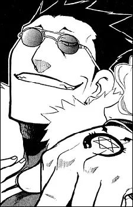
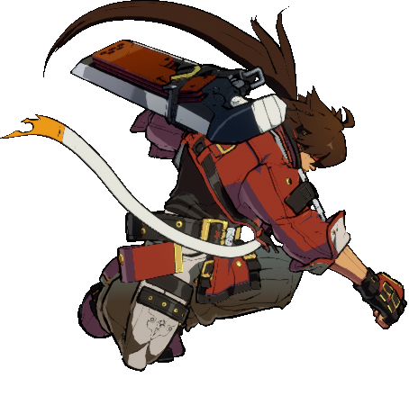
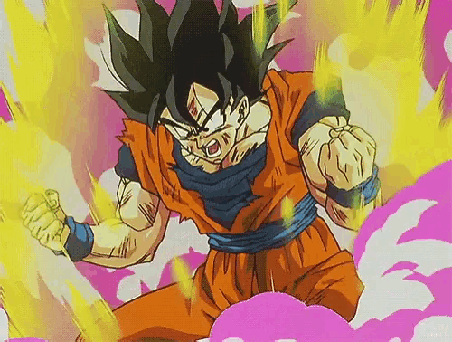
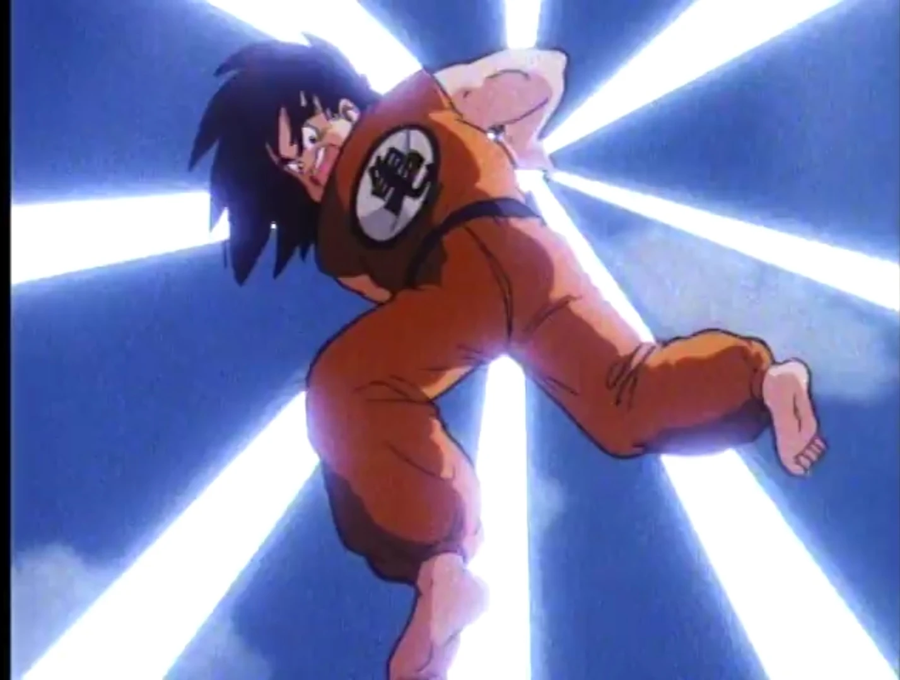
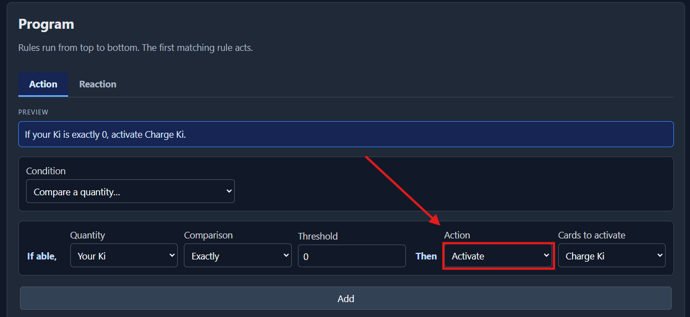

What's New?
What's New?
These mechanics are now part of CyberNetDeck's current format.
Immutable Cards
Immutable cards always begin in your hand, then enter the battlefield before the game starts. They give your deck a unique mechanic to build around. The current Immutable card is Charge Ki: activate it to power up for the turn and unlock cards that need Ki.
Agent Cards
Agent cards are characters that remain on the battlefield. They can take damage, and their Integrity works like hit points. An Agent is deleted when its Integrity reaches 0.
Damage
Damage is dealt to Agents first. If the opposing player has no Agents, the damage is dealt to their Sync instead. See the Rules Reference for the complete automatic targeting order when more than one Agent is in play.
Uplink
Your Uplink increases by 1 at the start of each of your turns. One For All now requires Uplink 2, so it cannot be played until your second turn. Uplink is a requirement, not a cost: reaching 2 does not spend it.
New Cards

If your hand is empty, draw two cards. Otherwise, discard a card at random.

Your opponent loses 2 Sync. You lose 1 Sync.

Activate this card only if you haven't played a card this turn. Gain 1 Ki. End your turn.

Play this card only if you have 1 or more Ki. It deals 3 damage.
Activating Charge Ki
You can activate Charge Ki by setting up a condition like this. Make sure Charge Ki is in your deck, then set Action to Activate.
